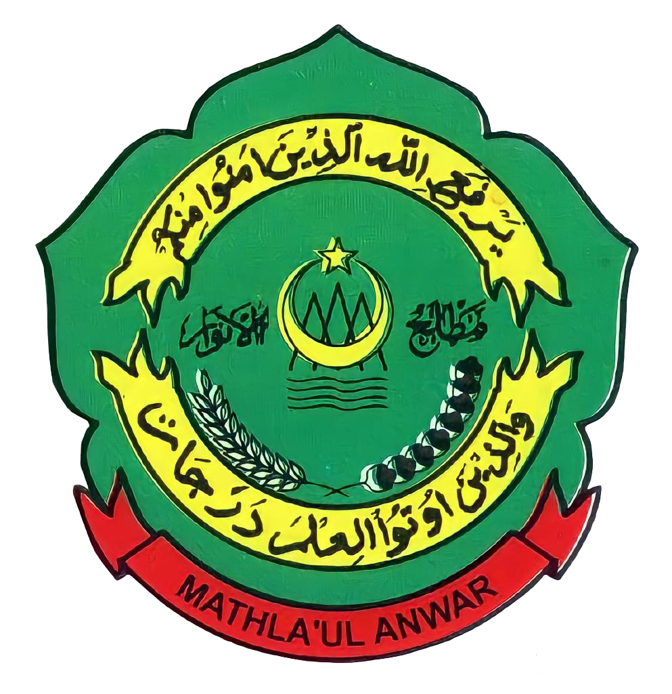
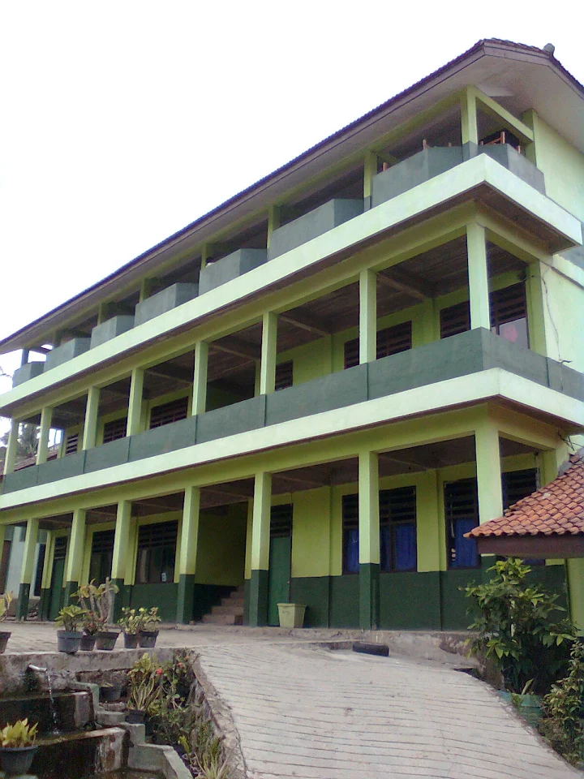

Cerdas • Berakhlak • Islami

Mencetak Generasi Qurani & Berakhlak
Kegiatan rutin seperti Maulid Nabi, Isra Mi'raj, Nuzul Qur'an dan Tahun Baru Islam. Bertujuan menanamkan nilai keagamaan dan mempererat ukhuwah antar siswa.
Pelatihan khusus untuk pengurus OSIS & MPK. Materinya meliputi kepemimpinan, public speaking, manajemen acara, dan kedisiplinan.
Kegiatan selama bulan Ramadhan berupa tadarus, kajian kitab, sholat dhuha berjamaah, dan lomba keagamaan antar kelas.
Kunjungan ke kampus/madrasah lain untuk menambah wawasan, ditambah outbound untuk melatih kerjasama tim dan refreshing siswa.
Dilaksanakan setiap hari Senin untuk menanamkan rasa nasionalisme, disiplin, dan tanggung jawab siswa.
Rutin setiap bulan untuk mendoakan guru, pendiri yayasan, dan meningkatkan kecintaan siswa terhadap Al-Qur'an.
Eskul wajib madrasah. Fokus pada kemandirian, kepemimpinan, survival, dan cinta alam. Rutin ada perkemahan dan lomba.
Tempat kajian Islam, tadarus bersama, latihan muhadhoroh, dan pengelolaan mading dakwah. Menjadi garda depan dakwah sekolah.
Melatih siswa dalam pertolongan pertama, donor darah, dan kesiapsiagaan bencana. Menumbuhkan jiwa sosial dan kemanusiaan.
Wadah menyalurkan bakat olahraga. Latihan rutin setiap minggu dan mengikuti turnamen antar madrasah/SMA se-Tanggamus.
Memberi edukasi tentang kesehatan reproduksi, narkoba, dan pengembangan diri remaja agar tidak terjerumus hal negatif.
Melatih siswa menulis berita, desain poster, dan mengelola majalah dinding madrasah sebagai media informasi.